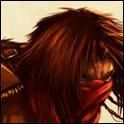

Guildes
L'Ordre de la Nouvelle Aube
Alyra
Age : 24 ansSexe : Femme
Race : Humain
Faction : Alliance
Formation : Démoniste
Description : Alyra est une jeune femme de taille normale, elle fait preuve d'une réelle beauté et d'un certain charisme. Elle laisse un certain mystère sur son passé qui semble si trouble dans sa mémoire... Des yeux bleux magnifiques et captivants, des cheveux ténèbreux, majestueux... Sa gestuelle est naturelle et elle esquisse souvent un sourire doux et bienveillant.
Plus d'infos sur Alyra >>>
Lire les 15 récits de Alyra >>>
Camylle
 Age : 19
Age : 19
Sexe : Femme
Race : Humain
Faction : Alliance
Formation : Prêtre
Description : La jeune femme prit place sur un banc sous un arbre, face à la cathédrale de Stormwind. Elle sortit de sa sacoche un petit carnet, dont elle respira la couverture faite de cuir. Elle l'ouvrit avec délicatesse, comme si c'était un trésor et découvrit les pages vierges. Elle prit alors sa plus belle plume et l'encre dorée qu'elle avait empreintée à Frère Kristoff, sans oublier sa plus belle écriture. Sur la page de garde il y avait juste une signature... "Camylle Eloan".
"Cher journal,
Avant de parler du futur, laisse moi te raconter le passé, et plus particulièrement, le mien (j'essayerai de faire court).
En effet, je ne peux commencer une nouvelle étape sans mettre sur papier tous ces souvenirs, car bien d'autres vont venir les bousculer par la suite !
Comment oublier mon enfance... Anetta fut comme une mère pour moi... C'est elle qui me recueillit à l'âge de trois ans, Papa ne pouvant pas s'occuper de moi seul suite à la mort de ma chère Maman...
Nous allions nous promener dans la forêt d'Elwynn... Je me souviens particulièrement de mon sixième anniversaire où nous avions déjeuné sur l'herbe verdoyante près du Lac de Cristal dans lequel nous nous étions baignés... C'était une belle journée de mai... Le doux chant des oiseaux résonne encore à mon oreille... Quelle surprise lorsqu'en rentrant à l'Abbaye, Frère Paxton, le bibliothécaire, me tendit ce paquet ! "Contes et Légendes Elfiques"... Mes yeux s'étaient illuminés en voyant le livre... Anetta avait ainsi d'autres histoires à me raconter le soir avant d'aller dormir... J'espère que je pourrai y aller un jour...
Ces deux personnes furent pour moi les plus importantes de ma première décennie... La Prêtresse me sensibilisait à la beauté de la nature, du monde extérieur tandis que Paxton s'occupait de mon apprentissage. Durant ces dix années, je m'étais montrée très curieuse, attentive à leur enseignement et je développais selon eux toutes les qualités requises pour suivre l'Enseignement de la Lumière.
Anetta et moi partîmes donc pour la grande Stormwind. Ce décor était tout nouveau pour moi et il m'inspira tout de suite confiance et bien être. Comment rester insensible à cette odeur de pain chaud qui flotte dans les airs, la vue des magnifiques fleurs exposées devant les boutiques, les visages animés des passants... Je ne pouvais m'empêcher de sautiller dans les rues... ! Quand nous arrivâmes devant la cathédrale, je restais ébahie devant tant de splendeur et de majesté. Je fus présentée à la Grande Prêtresse qui m'impressionna : elle portait une longue robe blanche, brodée de dorures, et l 'on pouvait lire sur son visage rayonnant toute la bienveillance et la sérénité. Je la pris alors pour modèle et désirait à tout prix lui ressembler. Après une entrevue pendant laquelle j'admirais et écoutais le chant des choristes, Anetta vint me dire au revoir Lorsqu'elle vit de petites perles naître dans mes yeux, elle me dit que je pouvais lui rendre visite quand je voulais. J'allais donc la voir le dimanche, toutes les deux semainesNous buvions ensemble un lait glacé, comme auparavant Je lui expliquais qu'à Stormwind, tout allait pour le mieux. J'excellais à l'école et j'allais enfin commencer à apprendre les Principes de la Lumière, étudier les liens entre le Moi et le reste de l'Univers, et les trois grandes vertus qui ne sont autres que le respect, la ténacité et la compassion.
Tout allait pour le mieux jusqu'au jour ou j'appris la mort de Papa, j'avais alors quinze ans Un courrier provenant du Goldshire m'annonçait qu'il avait été retrouvé sans souffle de vie. Il avait sombré dans l'alcool après la mort de Maman et mon départLa solitude l'a rendu fouDe cette nouvelle, il en résultat un mois de renfermement, un mois de mutisme. J'avais perdu toute joie de vivre, ainsi que mon foyer familial, que je n'avais presque pas connu. Je devais donc m'installer dans Stormwind On me trouva une petite chambre, chez les Duncan qui tenaient une boutique d'étoffes (Le parc n'étant pas loin, je pouvais aller rêvasser de contrées elfiques. J'appris donc à me servir du fil et d'une aiguille et vendais mes créations modestes : sacs, capuches, et capes diverses.
A l'école, j'avais acquis assez de théorie, il fallait donc maintenant que je passe à la pratique.
La Grande Prêtresse m'envoya auprès de Shaina Fuller, l'infirmière de la Cathédrale. Elle m'expliqua comment soigner efficacement, selon les circonstances et la gravité des blessures.
Je m'exerçais sur les malades et les blessés qui étaient temporairement gardés à l'infirmerie. Je prenais plaisir à leur faire partager ma bonne humeur et mon enthousiasme, à les voir sourire entre deux gémissements causés par la douleur que j'arrivais à leur faire oublier
Je n'étais pas utile seulement aux soins ! Quelle joie lorsque j'appris que je pouvais moi-même enseigner l'écriture et la lecture aux jeunes enfants de l'école de Stormwind ! (à dix-sept ans !) Ce fut une année vite passée ! mais riche en émotions
Puis enfinma décision, ma quête personnelleau début de ma dix-huitième annéeJ'étais enfin une prêtresse de la Lumière
Camylle était arrivée en bas de la page. Elle laissa s'échapper un long soupir de satisfaction. Elle s'arrêta d'écrire pour prendre une miche de pain, puis bu une gorgée de lait glacé. Enfin elle tourna la page, pour recommencer à écrire de plus belle.
Voilà maintenant cinq mois que je suis partie de Stormwind ! Je ne pouvais pas rester éternellement ignorante de ce monde plein de richesses et de curiosités ! Je découvre ainsi de nouveaux paysages, surprenants par tant de diversité et de beauté ! Et tant de cultures à connaître, tant d'êtres avec qui se lier d'amitié ! Quel changement ! Je ne sais par où commencer
J'ai d'abord fait la rencontre d'Yshtar Une jeune guerrière joviale avec qui j'ai parcouru les terres désolées de la Marche de l'Ouest, afin d'aider les pauvres paysans qui ont le courage d'y rester ainsi que la Milice.
Puis j'ai voyagé jusque les Carmines Qui fut l'endroit de nombreuses rencontres.
Un sourire se dessina sur le visage éclairé de la jeune femme
Parmi celles-ci, Balun, un nain guerrier d'exception. Il est maintenant mon compagnon de route. Son air renfrogné n'inspire pas sympathie au premier regard Mais j'ai su découvrir sous cette montagne de courage et de fougue, un cur énorme. Je suis alors devenue sa chtiott' curet'
J'ai aussi rencontré des elfes : Dalriada (encore une guerrière !) et Chêneblanc, un talentueux poète. Après avoir fait leur connaissance, mon désir d'aller chez eux est encore plus fort !
Et comment pourrais-je oublier Cevi ! Ce jeune et charmant voleur que j'ai eu le plaisir de taquiner lorsque nous sauvions un valeureux garde des orcsIl n'arrêtait pas de grognerJe ris encore en repensant à la fois où je lui faisais la tête !
Je me souviens d'un jour où j'avais entendu parler d'un tournoi dans des terres qui m'étaient inconnues Je voulais absolument y aller Un elfe, du nom de Sarolendë, accompagné de son fidèle compagnon, Baldor, m'expliqua que ces terres étaient fort hostiles et me proposa de m'accompagner. J'eus plusieurs pertes de connaissance au cours de ce voyage. A l'un de mes réveils, Sarolendë n'était plus seul. Deux hommes se tenaient à ses côtés. Ils se présentèrent à moi. L'un d'entre eux se nommait Silk, Silk Martallan, un voleur. A la vue de ses cheveux noirs, son foulard masquant son visage et ses dagues qui pendaient à sa ceinture, j'ai vite compris qu'il n'était pas question de le taquiner! Je m'attardais donc sur le second. Heltys. Il m'avait paru plutôt discret, cependant j'avais remarqué qu'il n'était pas tout jeuneIl devait être une véritable encyclopédie ! Je me sentis bien petite, mais tellement bien protégée ! Nous avions dû tout de même fuir une fois arrivés à l'arèneCe fut un véritable choc pour moi Voir tant de créatures barbares nous courir après, haches à la main Assoiffées de violence et de sang
Une fois en sécurité, c'était avec regret que je devais les quitter. Je leur demandais alors si je pouvais les aider dans leurs tâches, et c'est comme ceci que je les rencontra de nouveau à Ironforge (curieuse cité que celle des nains !). Ils accompagnaient un paladin du nom de Valken. Je m'en souviens parfaitement Quel charisme Etrange que je ne l'ai jamais rencontré à la Cathédrale auparavant ! Mon sentiment de protection cette fois-ci était doublement renforcé. Ce jour là, j'avais rencontré le clan du Kayan Khan au complet.
Depuis, dès que l'occasion se présente, j'accours leur rendre serviceJ'ai enfin l'impression de servir à quelque chose que toutes ces années d'études verront leur dure labeur récompensée
Le temps me presse, le récit s'arrête ici. A bientôt mon cher Journal.
La jeune femme rangea ses affaires dans son sac de soie et se leva. Le vent caressait ses cheveux châtains. Elle regarda une dernière fois la cathédrale de ses yeux gris perle. C'était un regard confiant, confiant pour l'avenir plein de nouvelles promesses. Puis elle se mit en route car son ami Balun l'attendait, ils devaient apporter leur aide aux Veilleurs et à la sombre ville de Darkshire
(Il n'y a pas de suite. Mais Camylle a décidé de reprendre en main son journal à partir d'une certaine date).
Plus d'infos sur Camylle >>>
Lire le récit de Camylle >>>
Cevi
Age : 19 ansSexe : Homme
Race : Humain
Faction : Alliance
Formation : Voleur
Description : Le jeune homme doit avoir prés de 18 ans, les yeux verts, les cheveux chatains clairs en bataille, il est imberbe, le visage assez fin, pas réellement désagréable à regarder, un sourire assez troublant comme si il semble en permanence se moquer de quelque chose ou de quelqu'un. Il porte une belle écharpe de soie noire autour du cou et c'est visiblement le seul vêtement onéreux qu'il porte. Il est vêtu d'une armure de cuir et une épée pend à son coté mais elle ne semble pas avoir beaucoup servit.
A peine entré il se dirige vers le tavernier, commande une bière et vient s'asseoir à une table, la votre :
Bien le bonsoir! Je me permet de m'asseoir ici car je cherche un peu de compagnie à vrai dire. Bien vous voulez quelque chose à boire? Je vais parler pendant quelques temps, autant vous mettre à l'aise. Voila, je me présente je me nomme Cevi et si je viens ici c'est parce que je cherche des gens qui pourrait m'aider, enfin d'abord m'écouter et ensuite m'aider. Rassurez vous je ne viens pas vous parler de trésors ancestraux ou de terres ayant appartenu à ma famille et que je dois récupérer.. Quoi que c'est presque ça en fait.
Le sourire du jeune homme s'élargit avant d'être dissimulé par la choppe qu'il porte à ses lèvres.
Bien voila mon histoire...
Je suis né il y à 18 ans, lors de la décade du faucon de l'année 610 dans un bordel des bas quartiers de Stormwind ; ma mère était une catin qui n'a pas su faire attention alors qu'elle faisait son travail.. Ou peut-être n'a t-elle pas voulu le faire. Toujours est il que je ne vais pas me plaindre, je ne serais pas là sinon. Bien évidemment elle eu quelques problèmes mais elle réussit à s'en sortir ... En partie en me confiant à ses amies, catins elles aussi, lorsqu'elle recevait des clients. Ainsi j'eus une bonne dizaine de mères.
Mais durant l'année de mes six ans ma mère mourut, battue à mort par un ivrogne, qui heureusement pour lui avez assez d'argent pour que l'on ferme les yeux. On me dissimula les causes de sa mort, ma mère était morte voila tout. Pour être franc cela ne modifia pas vraiment ma vie, j'avais toujours une douzaine de mères, certaines aimantes, d'autres sévères et aigris, d'autres encore qui me couvaient à l'excès. Ce sont elles qui s'occupèrent de m'éduquer, et on peut s'attendre à une éducation assez sommaire lorsque la salle d'étude est un bordel. Non pas qu'elles me donnèrent une éducation pour me faire travailler dans le bordel loin de là. Pour rien au monde elles ne désiraient me voir vivre dans un tel endroit.
Jusqu'à mes dix ans j'appris quelques trucs, la cuisine, le calcul parce qu'il ne faut pas se faire avoir avec la monnaie, le vol et la filature pour quand les clients essayent de ne pas payer ou de mal payer. Toutes ces choses indispensables à un jeune garçon dans la rue ou un bordel. C'est à cet age que l'on estima juste de me révéler comment ma mère était morte. Bien entendu je jurais farouchement de la venger, et bien entendu on ne me pris pas au sérieux. Que pouvait faire un garçonnet de dix ans contre un adulte qui n'hésiterait pas à le battre à mort? Bizzarement elles arrivèrent à me faire comprendre que d'essayer de tuer cet homme de mes mains était un suicide. Mais comme quoi les enfants peuvent être retords, j'eus une idée lumineuse.
Cet ivrogne continuait à venir dans ce bordel malgré son meurtre. Il était persuadé que l'argent lui permettait tout surtout avec ceux qui n'en n'avaient pas, ou peu. Je profitais donc d'une de ses visites où il était encore ivre pour subtiliser sa bourse et remplacer son précieux or par les maigres piécettes de cuivre que j'avais pu "trouver" par ci par là. Il ne s'en aperçut qu'au moment de payer. Bien entendu il se mis à crier au vol et au bout de quelques minutes de recherche plus ou moins active on retrouva les pièces dans mes poches. On réussit à l'empêcher de me mettre en prison, en lui offrant la nuit bien sur. Quand à moi je fus sévèrement puni, mais plus que toutes les punitions qu'on ai pu m'infliger, l'idée que mon plan que je trouvais si formidable pour venger ma mère soit d'une bêtise et d'une stupidité sans borne, était pour moi une cuisante blessure.
Durant encore quelques années je restais dans ce bordel. Je sortais de temps en temps pour échapper à mes mères et vivais de petits larcins qui se terminaient le plus souvent en course effrénée dans les quartiers de Stormwind. Au fil des années je réussis à affûter mes réflexes et mon agilité. Je devint un petit voleur sans prétention. Puis arrivé à mes 14 ans je pris une décision qui bouleversa ma vie si l'on puis dire, toujours est-il que c'est cette décision qui me fait avancer désormais ; je voulais racheter le bordel où j'étais né et ainsi permettre à toutes ces femmes qui m'avaient élevé de vivre normalement. En faire une auberge que je léguerais à mes mères qui sait? Toujours est-il que je pris cette décision et bien conscient qu'il me faudrait une somme considérable pour y arriver je quittais Stormwind pour aller sur les routes dans l'espoir d'utiliser mes maigres talents de cambrioleur pour amasser assez d'argent. Je me rend compte que même quatre ans après mon fabuleux plan je n'avais pas beaucoup mûri finalement.
Le jeune homme interrompt son récit pour s'humidifier un peu la gorge avant de reprendre.
Durant quelques mois je parcourais les routes, allant de villages en villes. Je faillis être pendu à plusieurs reprises et finalement au bout de cinq mois j'avais gagné à peine de quoi vivre et récolter une belle cicatrice sur tout le cou, qui provenait d'une corde un peu trop serrée et qui avait bien failli me coûter la vie si je n'avais pas réussi à la couper et m'enfuir.
Néanmoins durant ces cinq mois il eu un évènement qui me laisse un goût amer. Alors que je visitais une ville, je m'arrêtais dans une auberge pour me reposer et me rincer le gosier, et quelle ne fut pas ma surprise de retomber sur l'homme qui avait tué ma mère! Aprés avoir murmurer un remerciement au dieu qui avait accomplit ce miracle je me pris une choppe et alla m'asseoir à une table. J'écoutais attentivement et finalement ce fut un riche marchand qui me fournit le plan en or. Il discutait avec un autre homme, manifestement un ami, et lui racontait qu'il avait avec lui une bourse rempli de pierres précieuses qu'il destinait à une vente prochaine dans cette ville. Toujours attentif, je laissais l'assassin s'enivrer comme à son habitude, et me focalisais sur mon marchand. Manifestement il dormait dans l'auberge. Je le laissais donc monter et peu après je le suivais et entrais dans la chambre voisine à la sienne. Je pris mon mal en patience et attendis qu'il dorme ; une fois endormis je me glissais discrètement dans la salle commune jusqu'à l'aubergiste et profitais de son inattention tandis qu'il nettoyait les dégâts causé par les ivrogne, pour subtiliser le double de la clé de la chambre du marchand. Une fois celle ci en ma possession, je remontais silencieusement et pénétrais dans sa chambre. Je mis quelque minutes qui me parurent une éternité pour trouver cette bourse ; finalement une fois celle ci dans ma poche, je m'éclipsais et attendis que mon ivrogne monte se coucher à son tour. Cela prit beaucoup moins de temps et au bout d'une heure j'entendis sa démarche comparable à celle d'un tauren monter les escaliers. Il était tellement ivre qu'il entra dans sa chambre sans même prendre la peine de fermer derrière lui et s'effondra comme une masse. Je patientais quelques minutes puis je rentrais dans sa chambre et cachais la bourse dans ses affaires et la clé dans sa poche. Puis je retournais dans ma chambre et essayais de dormir, mais j'étais trop excité. Je finis par sombrer dans un sommeil de plomb.
Je fus réveillé le lendemain par les hurlements du marchand qui criait au vol. Ce marchand semblait influant puisque quelques instants plus tard la garde cernait l'auberge et commençait à fouiller les chambres, des fois que le voleur serait toujours ici. Il ne trouvèrent rien dans ma chambre à part ma dague et ma maigre bourse. Puis ils arrivèrent à la chambre de l'ivrogne ; le pauvre il n'avait pas décuvé mais les bruits des chaînes autour de ses poignets et de ses jambes le dégrisèrent rapidement. Il fut emmené en prison et quelques jours plus tard on pris la décision de le pendre. Quelle joie pour moi! Du moins c'est ce que je croyais. Je me fis un plaisir d'assister à sa pendaison, alors qu'il pleurait encore et se jurait innocent. Finalement la sentence fut rendu et il fut pendu. Bizarrement j'eus l'impression que son regard se posait sur moi alors qu'il rendait son dernier souffle et je crus y distinguer une lueur de compréhension, comme si il m'avait reconnu. Malheureusement, cette vengeance ne m'apporta pas vraiment la satisfaction que j'espérais. Je m'enfuis assez rapidement de cette ville et durant des semaines mes rêves furent hantés par cet homme et son regard. Aujourd'hui encore il arrive que je me réveille en hurlant à cause de ces cauchemars. Et la seule solution que j'ai pu trouver pour l'instant, c'est l'alcool. Lorsque les cauchemars deviennent insupportable, je m'enivre jusqu'à sombrer dans un sommeil sans rêves.
Le jeune homme essaye en vain de dissimuler un tremblement qui allait croissant durant son récit, finalement il boit une longue gorgée de bière et son regard montre durant quelque instants ses tourments, puis il se reprend rapidement et poursuit son histoire.
Conscient que je n'étais pas assez bon pour le cambriolage pour l'instant je changeais de voie et m'orientais vers le théâtre. Je rejoignis une troupe d'acteur et durant deux ans je jouais divers rôles jusqu'à ce que la troupe se sépare. Là encore mes talents d'acteur étaient plus que moyen et je ressortais avec une bourse bien maigre. Ne voyant plus vraiment d'autre solution, je me décidais à rejoindre une bande de bandits de grand chemin. J'investissais mes dernières pièces dans une armure de cuir et une épée courte et partais à leur recherche. J'avais entendu parler justement d'une bande qui écumait la région et je ne mis pas beaucoup de temps à les trouver. Aprés avoir déployé des trésors de persuasion pour leur faire comprendre que je n'étais pas un espion ni une victime potentiel, ils m'acceptèrent parmi eux, jugeant qu'un homme de plus ne ferait pas de mal, même aussi jeune et inexpérimenté. Je restais avec eux durant prés de deux ans. Durant ces années ils m'apprirent à me battre, mais je ne me débrouille pas très bien à vrai dire, à voler et parfois tuer même si j'ai eu beaucoup de mal. Je restais néanmoins avec eux, même si je finis par comprendre que ce n'étais pas fait pour moi ; mais je craignais qu'ils n'essayent de me tuer si je fuyais. Finalement les mort-vivants arrivèrent et la majorité de notre bande fut décimée. Je réussi à m'enfuir avec quelques uns d'entre eux et je réussis à les persuader que nous aurions plus de chance de survivre en nous séparant. Je m'enfuis à toute jambes et courus me réfugier à Stormwind. J'y suis resté durant un an et demi.
Je suis retourné au bordel pour donner le peu d'argent que j'avais amassé, en remboursement de toutes ces années où elles se sont occupées de moi. Durant ces un an et demi, j'ai travaillé dans les différentes taverne du coin comme acteur, mon succès fut à peine meilleur qu'auparavant mais cela me permis de survivre jusqu'à aujourd'hui.
Maintenant je suis décidé à repartir sur les routes toujours dans l'idée d'amasser assez d'argent pour racheter ce bordel. Mais j'ai compris que je n'y arriverai pas seul et je suis donc parti à la recherche de compagnon qui pourrait m'aider dans ma tache.
Le jeune homme achève son récit en même temps que sa bière et vous scrute avant de reprendre :
Voila vous savez à peu prés à quoi se résume ma vie, il reste encore des zones d'ombres et les connaître ne vous servirait à rien.De plus je ne vais pas tout dire à des gens que je viens à peine de rencontrer, manifestement l'alcool m'a déjà fait trop parler. Comme je vous l'ai dis, je viens demander de l'aide pour quelque chose de bien maigre, mais c'est important pour moi, et pour avoir vécu dans ce bordel durant toute mon enfance, je peux vous garantir que je ne souhaite ça à personne. Libre à vous de m'aider ou de vous moquer de moi mais si vous ne voulez pas m'aider je trouverai quelqu'un d'autre. Bonne soirée et à bientôt.
Le jeune homme se lève et semble tanguer un peu, manifestement ce n'était pas sa première bière de la soirée et vous pensez que ce ne sera pas la dernière. Il arrive néanmoins jusqu'à la porte et jette un dernier regard sur la salle avant de sortir, la porte se fermant silencieusement.
Plus d'infos sur Cevi >>>
Lire les 10 récits de Cevi >>>